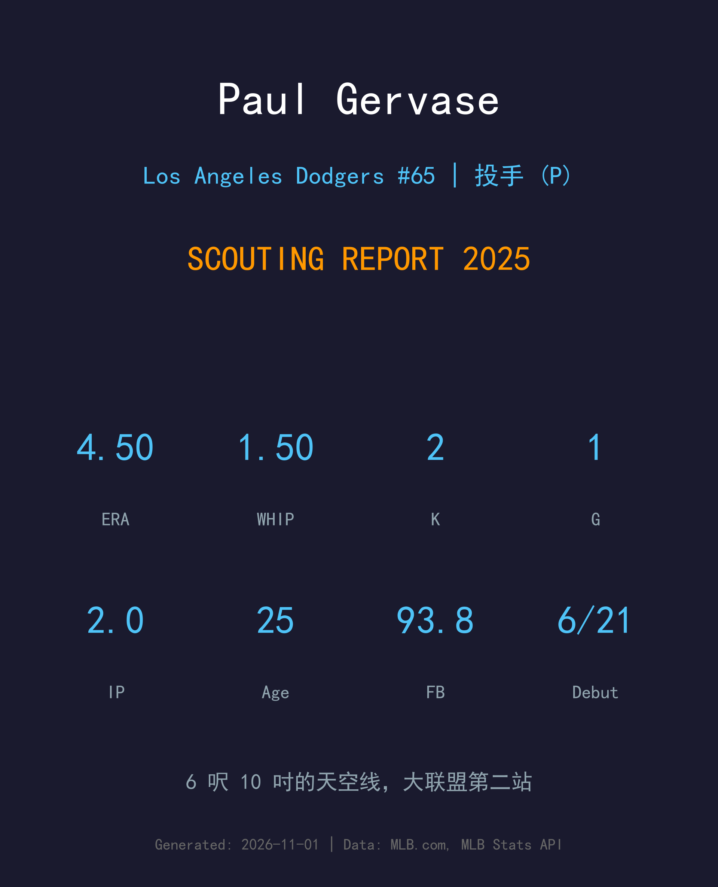
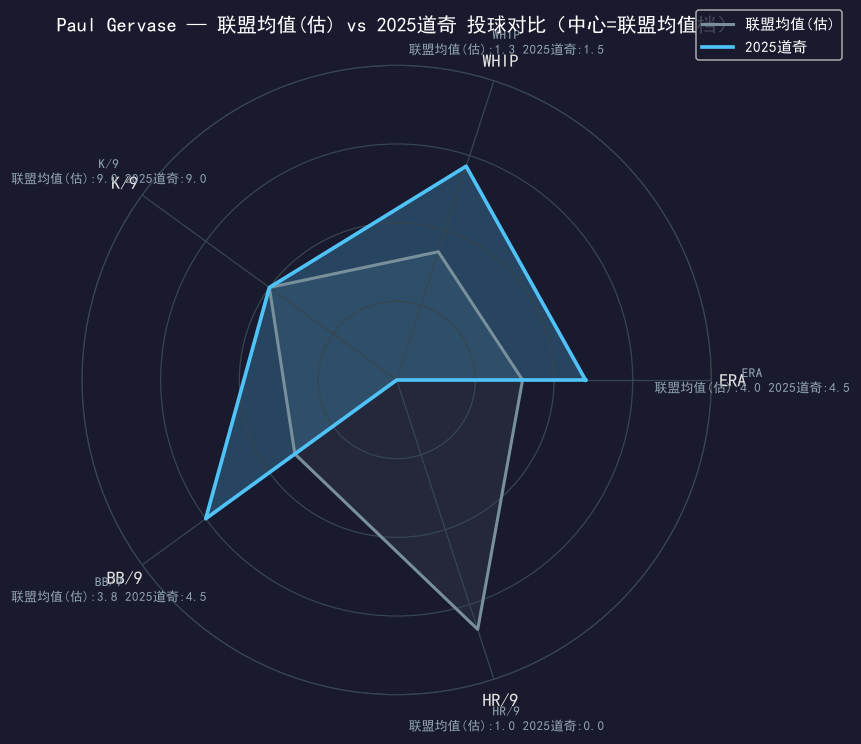
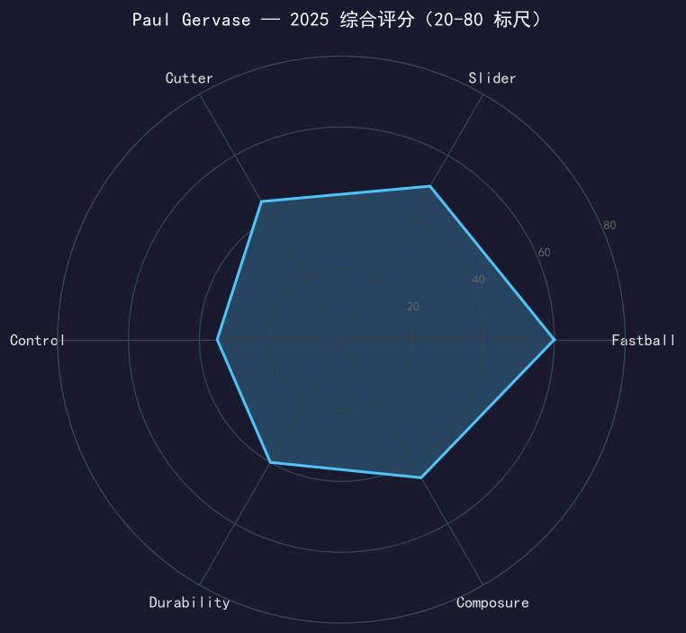

Los Angeles Dodgers #65 | 投手 | 右投 | 6 呎 10 吋的天空线，大联盟第二站

Paul Gervase 进大联盟的第一年就被写进了两条历史：6 月 21 日他以光芒投手身份完成 MLB 首秀，成为大联盟现役最高的投手（6'10"，史上最高纪录是 6'11" 的 Jon Rauch）；7 月 31 日，他被交易到刚刚卫冕在即的洛杉矶道奇——一支刚在世界大赛连冠路上狂奔的卫冕冠军牛棚。
道奇段只有 1 场：2 局、4.50、2 三振 1 保送、32 球。数字普通，过程却不普通：8 月 1 日激活、8 月 2 日下放、8 月 20 日召回、8 月 21 日再下放、9 月 29 日扩编召回——四个月内五次跨大陆飞行，只为这 2 局。11 月 2 日，道奇在赛季结算时重新激活了他的名字：对一个 25 岁的新秀来说，这意味着「明年还会见到你」。
从 2025 年 11 月的视角看，Gervase 是所有"小样本新秀"里最值得押注的物理模板之一：6'10" 的出手点让 93.8 mph 的速球看起来像从二楼窗户丢出来，打者的俯视视角几乎不存在。他需要做的只是把这一副天赋，变成能重复 60 次的动作。
在坦帕湾光芒登上大联盟，成为现役最高的大联盟投手。首秀年的光芒段：5 场 6.1 局、三振 6 人次。
光芒将 Gervase、左投 Adam Serwinowski 与捕手 Ben Rortvedt 打包送到道奇，换回一垒手 Hunter Feduccia——这笔交易让他在职业生涯第一个赛季就披上了冠军热门战袍。
赛季结算日，道奇重新激活 Gervase——一个 25 岁新秀在卫冕冠军的 40 人名单上保住了位置，为第二年春天留下一张机票。
以下为道奇段数据（2025-07-31 自光芒交易加盟、8 月 1 日激活、8 月 2 日/8 月 21 日两次下放、9 月 29 日扩编召回）：

| 赛季 | 球队 | G | ERA | WHIP | IP | SO | BB | HR |
|---|---|---|---|---|---|---|---|---|
| 2025 | TB | 5 | 4.26 | 1.74 | 6.1 | 6 | 5 | 3 |
| 2025 | LAD | 1 | 4.50 | 1.50 | 2.0 | 2 | 1 | 0 |
两段样本都只有个位数场次，但拼出的画像一致：一个还能再成长的 25 岁新秀——ERA 在 4.5 上下浮动、保送偏多（光芒段 BB/9 7.1）、全垒打控制是短板（光芒段 3 轰），但道奇段 2 局零全垒打、0 轰 2 K 的形态说明"把球压低"这门课他已经修了一半。对 6'10" 的投手来说，最大的敌人从来不是打者，而是自己那副还在学习如何重复动作的骨架。
2025 赛季真实配球数据（MLB Stats API pitchArsenal，光芒+道奇汇总）：
接近六成配球的绝对主力。6'10" 出手点赋予它天然的俯视进垒角——同样 93.8 mph，从 Gervase 手里出来的球，打者看到的垂直落差比平均投手大出一截。
主要变化球，9.6 mph 速差。高出手点放大了滑球的横向视觉位移，是他两好球后的主要追打选项。
对付左打的内角凿子，尚在打磨阶段——占比一成说明道奇教练组仍在为他的第三球种找定位。
6'10" 不是营销数字，而是实实在在的几何优势：出手点远高于联盟平均，意味着速球的进垒角度更陡，打者产生的击球仰角更低——这就是为什么他的被全垒打率在道奇段能压到零。历史经验（从 Randy Johnson 到 Jon Rauch）表明，超高投手的成长曲线都比常人慢半拍：协调 6'10" 的骨架完成可重复的动力链，需要普通投手两倍的时间。Gervase 25 岁才首秀，在普通人眼里是"大器晚成"，在这个身高段却是标准进度。
6 月 21 日首秀 → 7 月 31 日被交易 → 8 月 1 日激活 → 8 月 2 日下放 → 8 月 20 日召回 → 8 月 21 日下放 → 9 月 29 日扩编召回 → 11 月 2 日激活。这条锯齿线是道奇对"发育型新秀"的标准用法：不让大联盟的失败磨损信心，也不让 3A 的舒适消磨锐气。他全年 MLB 只有 6 场，但 3A 的每一次登板都在为同一个目标服务——把 93.8 mph 和 84.2 mph 的动作统一成一个挥臂。
卫冕冠军的 40 人名单是 MLB 最贵的房地产，道奇却在 11 月 2 日为 Gervase 留了一格。原因不难猜：6'10" 的身高无法被教授，而 25 岁的年龄意味着还有 3-4 年发育窗口；对比市场上为"可能变成 95 mph"支付数百万合约的球队，留着自己养的成本约等于零。这是一笔典型的「道奇式囤货」——和当年捡回 Turner、Muncy 的逻辑同源，只不过这次囤的是一副无法量产的骨架。

把天空线压低成好球带的长期工程
C 级 / 高上限发育型彩票（未来值 55）
道奇 2025 季后赛夺冠之路：外卡 2-0 红人 → NLDS 3-1 费城人 → NLCS 4-0 酿酒人 → 世界大赛 4-3 多伦多蓝鸟。
Gervase 没有出现在任何一场季后赛的登板记录里——对一个月前还在 3A 的大联盟"新生"来说，这完全不令人意外。但他的新秀年依然镀上了一层冠军光环：6 月首秀、7 月加盟卫冕冠军、11 月保留名单位置。当 2025 年的冠军戒指传到他手里的那天（道奇的传统是全员有份），他会是戴得最仔细的那个人——因为没人比他更清楚，这副骨架走到这里有多不容易。
Gervase 的 2026 年大概率在 3A 奥克拉荷马城开始，目标只有一个：把 BB/9 从 7 档压到 4 档。如果他能做到同时保住 93+ 的球速，道奇会在某个夏天的伤病潮里再给他一张机票——而 6'10" 的投手一旦站稳，很少再跌出轮换讨论。他的 comps（ Randy Johnson 后期、Chris Young）都走过同一条路：晚熟、高保送、高天花板。
理想剧本：3A 打磨一年后进入道奇牛棚，成为对左打的秘密武器
现实基准：在 3A 与 MLB 之间往返一年，慢慢磨掉保送率
下行风险：骨架协调性始终无法定型，沦为「永远的潜力股」
Paul Gervase 来自北卡罗来纳州的卡里——一个以优质学区闻名的郊区小城，不像是能走出 6'10" 职业运动员的地方。他从小就是所有球队里最高的那个，但「最高」在棒球里从来不是保送票：过高的骨架意味着每一个棒球动作都要重新学习，他的整个青年时代都在与自己的四肢协调作战。
2025 年 6 月 21 日，25 岁的他终于在坦帕湾登上大联盟——比同届新秀平均晚了三到四年，但在 6'10" 的身高段，这甚至算早的。光芒给了他 5 场机会，然后在 7 月 31 日把他送到了道奇——那笔三方记忆里属于 Ben Rortvedt 的交易，顺带改变了这个年轻人的轨迹：从重建队牛棚的末端，到卫冕冠军的 40 人名单。
2025 年 11 月的 Paul Gervase 是卫冕冠军名册上最年轻的名字之一。他的 2025 年只有 8.1 局大联盟投球，却已经完成了一次完整的旅程：首秀、被交易、五次名单变动、冠军戒指、续约留名。对卡里来的高个子来说，天空线不是终点——是把每颗球从那里压进好球带的开始。